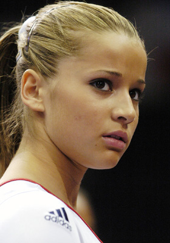

Alicia Sacramone (USA)

2004 World Cup V Champion
2005 World FX Champion
2008 Olympic Silver Team Medalist
Alicia was born on December 3, 1987, in Boston, MA. After taking dance lessons for a few years, she took up gymnastics at age 7. She trained at Brestyan's, under Romanian-born coaches Mihai and Silvia Brestyan.
Competition Results
2000
Jr. US Challenge: 8th AA
2001
Jr. US Classic: 38th AA
2002
Jr. American Classic: 20th AA
Jr. US Championships: 22nd AA
Jr. US Classic: 7th AA
USA-JPN Dual Meet: 1st Team,
2003
American Classic: 10th AA
Massilia Gym Cup: 4th FX, 9th V
Podium Meet: 26th AA
US Championships: 14th AA
2004
American Classic: 4th AA
Ghent World Cup Qualifier: 2nd V, 4th FX
Pacific Alliance Championships: 1st Team, 1st V
Pan American Event Championships: 1st V, 1st FX
Parkette Invitational: 9th AA
US Championships: 19th AA
World Cup: 1st V, 6th FX
2005
American Cup: 1st V, 2nd FX
Ghent World Cup Qualifier: 1st V, 1st FX
Pan American Championships: 1st Team, 1st V, 1st FX, 5th AA
USA-GBR Dual Meet: 1st Team, 1st V, 1st FX, 2nd B
US Championships: 4th AA, 1st V, 1st FX
US Classic: 3rd AA
World Championships: 1st FX, 2nd V
2006
US Championships: 5th AA, 1st V, 1st FX, 6th B, 8th UB
US Classic: 3rd AA
World Championships: 2nd V
2007
US Championships: 17th AA, 1st V, 3rd B, 3rd FX
US Classic: 10th AA, 1st V, 1st B, 1st FX
World Championships: 1st Team, 139th AA (prelims), 2nd FX, 3rd V
2008
Olympic Games: 2nd Team, 4th V
US Championships: 1st V, 2nd B, 3rd FX
US Olympic Trials: 1st V, 5th B, 5th FX
V
2010
US Classic: 1st V, 1st B
USA Championships: 1st V, 2nd B
World Championships: 2nd Team, 1st V, 5th B
2011
US Classic: 1st V, 1st B, 3rd FX
USA Championships:1st B, 2nd V,8th FX
World Championships: 1st Team
2012
US Olympic Trials:
USA Championships: 1st V, 3rd B
This page was created on July 5,
2009 and was last updated on July 01, 2012.
© Gymn Forum